La carta
Lun a sáb 8:30 a. m. a 4:30 p. m.
Panadería y restaurante en San Francisco, atendido por sus dueños
Cocina panameña, venezolana y americana bajo el mismo techo. Desayunos, almuerzos, panadería y repostería, con opciones vegetarianas y espacio para tu mascota.
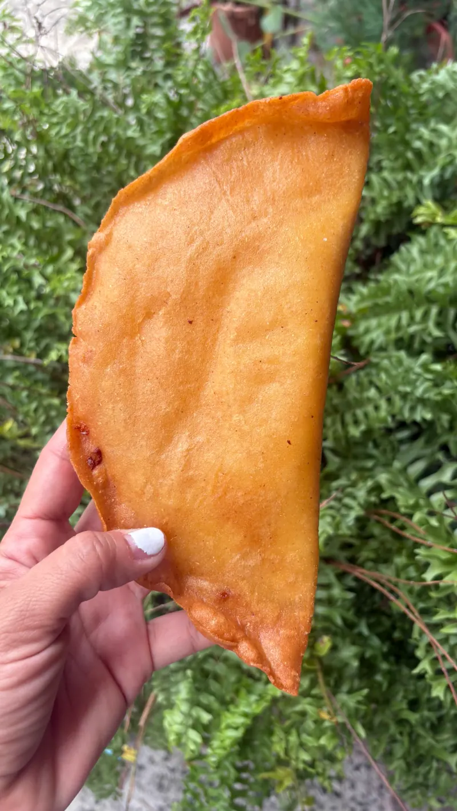
Lun a sáb 8:30 a. m. a 4:30 p. m.
Panes y repostería se hornean aquí, en tandas pequeñas, para que lo que llegue a la vitrina esté recién hecho.
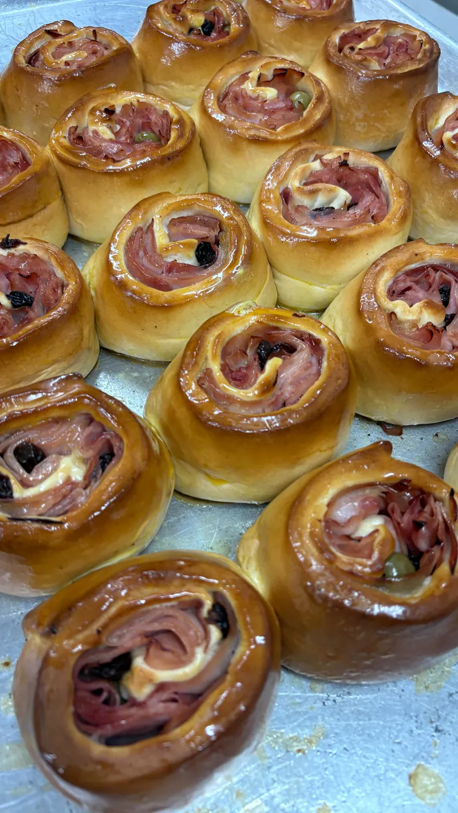
Pancitos de jamón, dulces y panes de varias partes del mundo, para acompañar el café o llevarte a casa.
Queso blanco envuelto en masa, crujiente por fuera y derretido por dentro. Las empanadas salen igual de doradas.
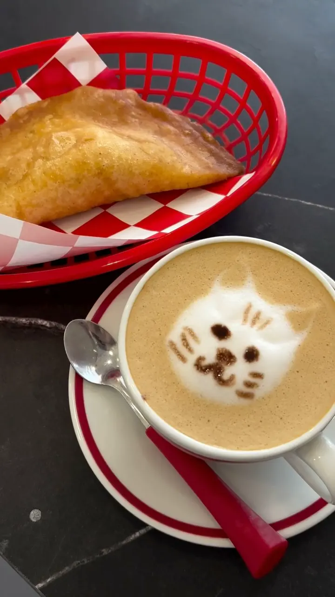
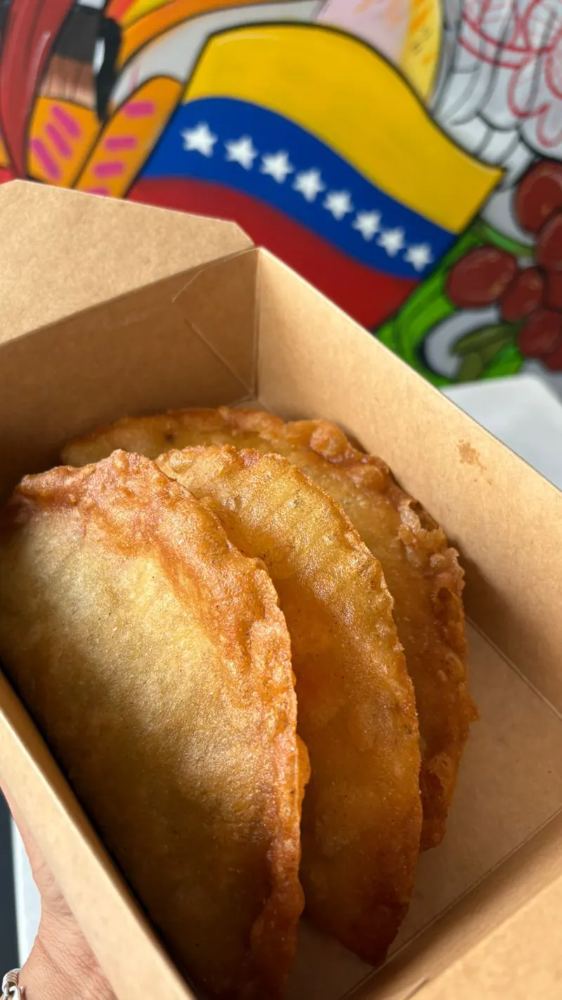
Con un buen café para quedarte, o en caja para llevar. Si prefieres que te llegue a casa, también estamos en PedidosYa.
Todo se hace en casa, en tandas pequeñas, y se nota. Estos son los platos por los que la gente vuelve.
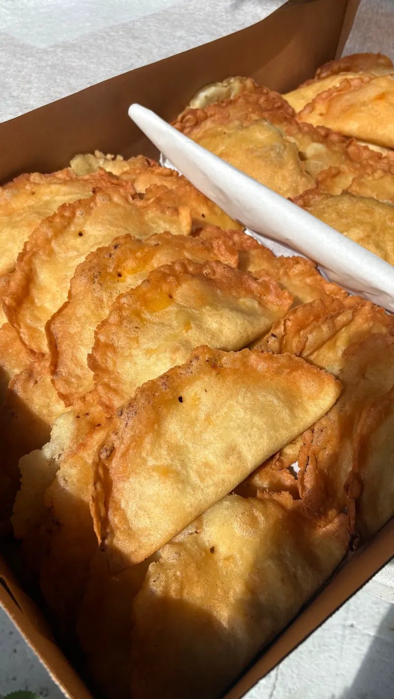
La estrella
Masa de maíz dorada, crujiente por fuera y bien rellena por dentro. Es lo primero que menciona casi todo el que deja una reseña.
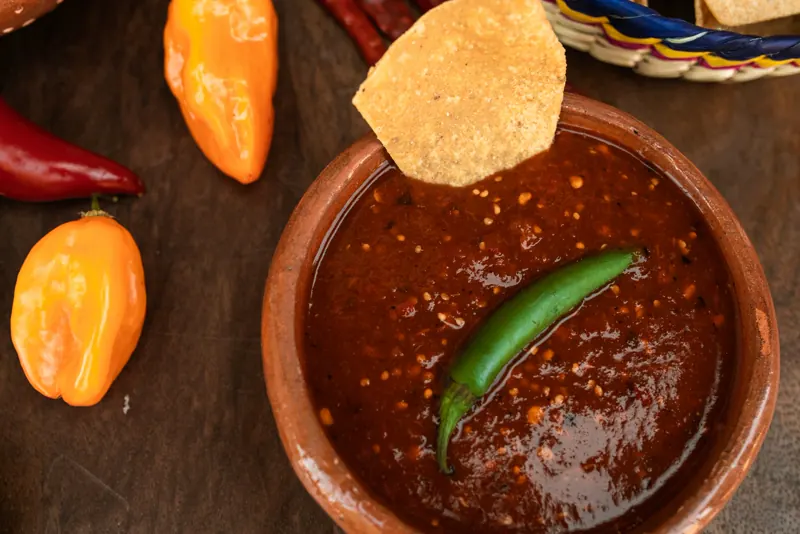
Panadería y repostería
Panes de varias partes del mundo, pan de jamón, dulces y postres para acompañar el café o llevarte a casa.
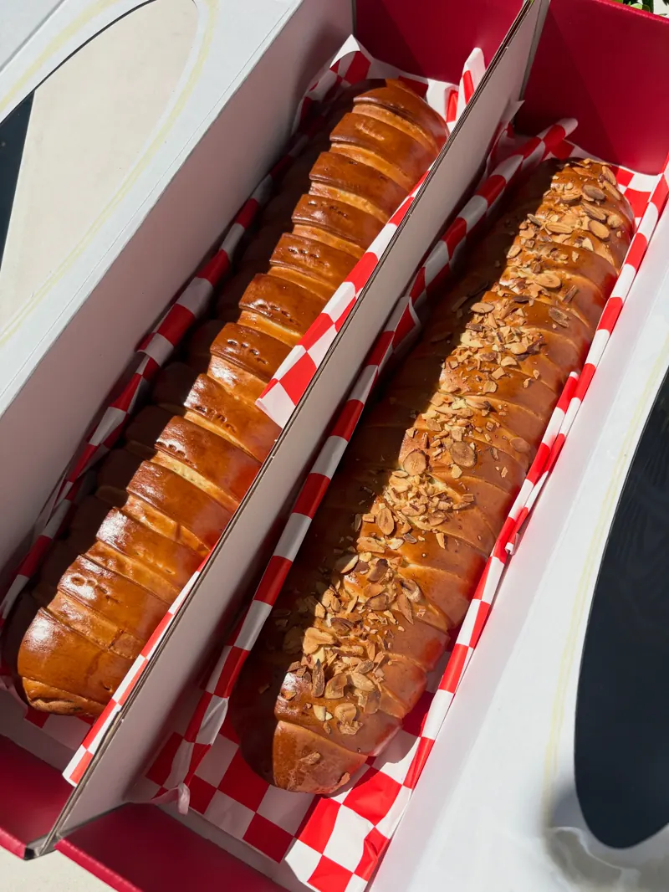

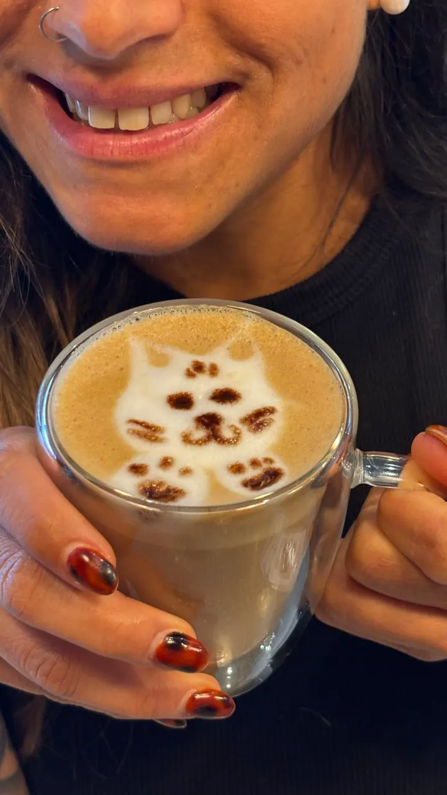
Café y espresso
Un buen café para la mañana o para cerrar el almuerzo con algo dulce.
Desayunos y almuerzos
Para empezar el día o para la hora de almuerzo. Pregunta por WhatsApp qué hay hoy.
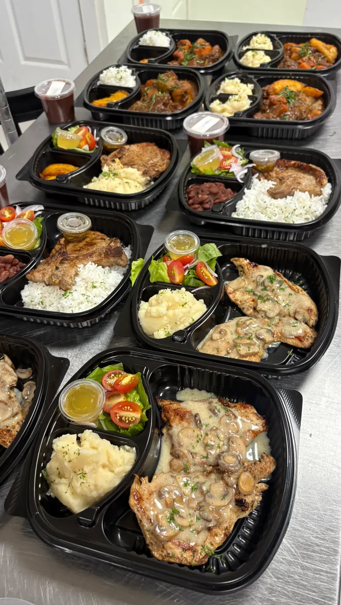
Leímos las reseñas. Lo que más se repite es el trato de los dueños, las empanadas y el sabor venezolano de verdad.
4.9 de 5
| Plataforma | Calificación | Reseñas |
|---|---|---|
| 4.9 | 13 reseñas | |
| Tripadvisor | 4.9 | 8 reseñas |
| Sluurpy | 4.7 | 26 reseñas |
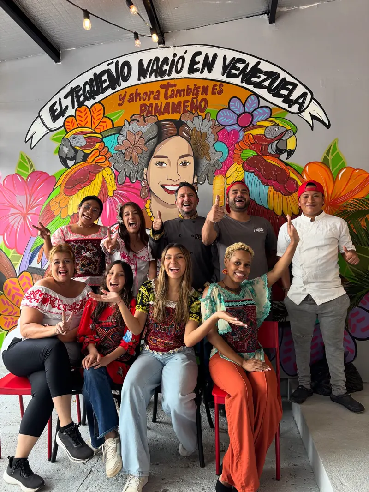
Te saludan, conversan contigo y te hacen sentir parte del barrio.
Es el plato que más se menciona, y siempre para bien.
Quien conoce la cocina venezolana dice que aquí la encuentra tal cual.
Te atienden rápido, con cariño, y la cuenta no asusta.
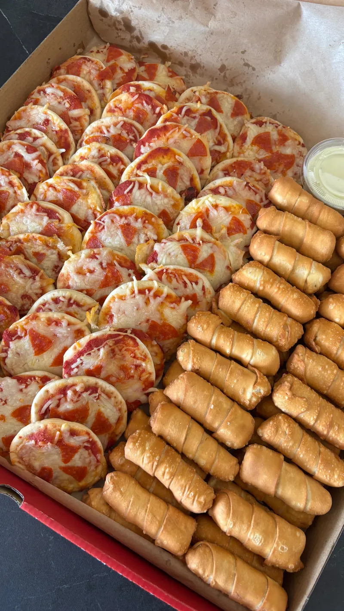
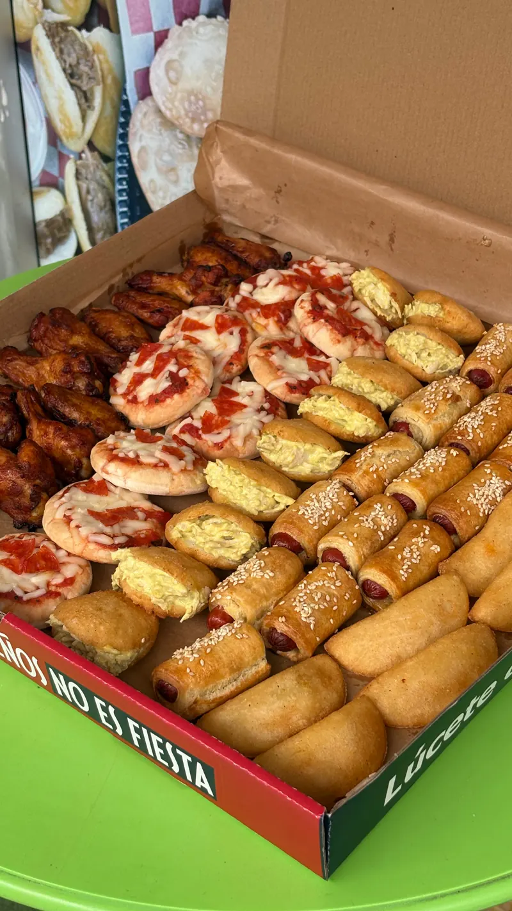
Para fiestas, cumpleaños y reuniones
Los mismos tequeños de la vitrina, en paquetes congelados. Los guardas en el congelador y los fríes u horneas justo antes de servir.
Escríbenos por WhatsApp con la cantidad y el día de tu fiesta.
Pasa a buscarlos a Plaza Fundadores, en San Francisco.
Cocínalos al momento y sírvelos calienticos.
Pregunta por cantidades y disponibilidad por WhatsApp.
Queda al lado de Café Lavanda, cerca del car wash. Somos el último local a la izquierda.